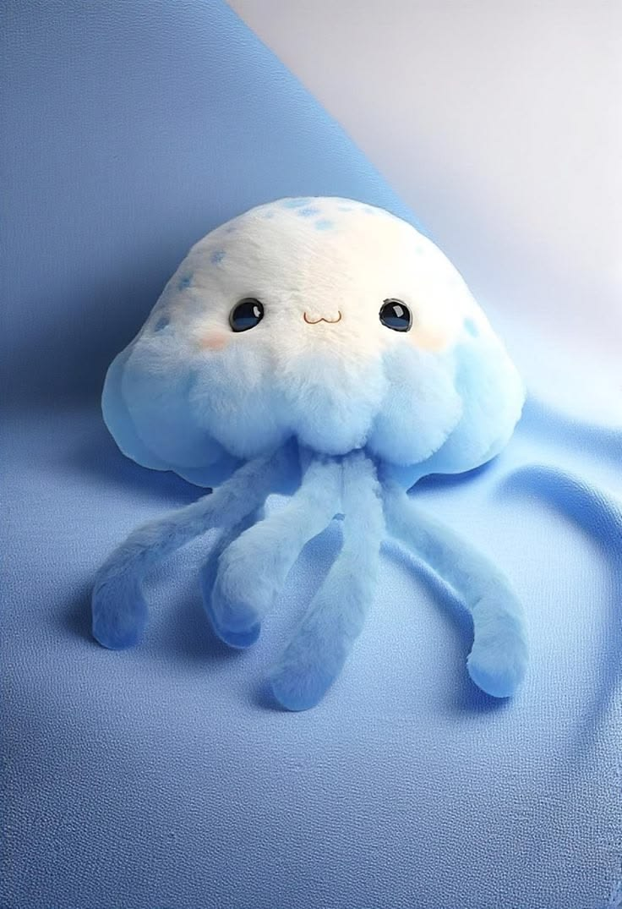

Your cute screen pet — following your cursor on every page.
Click the pet — it jumps and sends hearts. Leave the mouse still for 20 seconds and it falls asleep (Zzz).Open source (MIT) — remix and share freely.